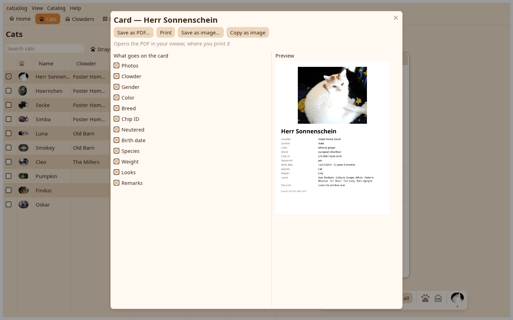

The card, the missing poster and the vet report are documents the desk previews as they will print, then saves as PDF or image, copies to the clipboard or hands to the printer.

Tick the values that go on it and watch the preview follow. Copy card as image puts it on the clipboard for a messenger; Save PDF, Save image and Print are in the bar.
From a card's menu or the Catalog menu for a missing cat: the ticks, the photos, the extra line, the code; printed black on white.
The date range, the patient summary switch, the rows to take out, a curve per number; the preview follows every change and speaks the app's units.
Print writes the PDF and opens it in your PDF viewer, which prints through the system dialog.